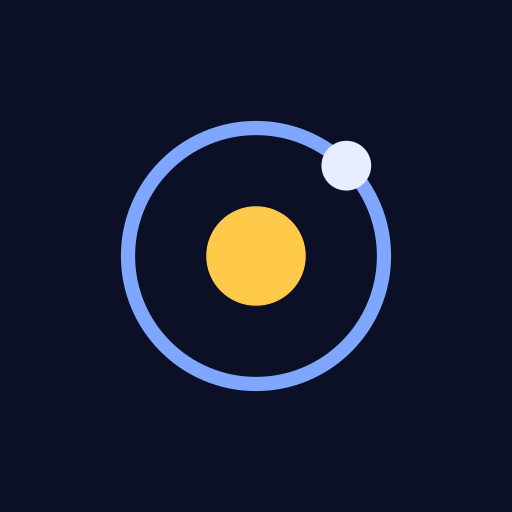
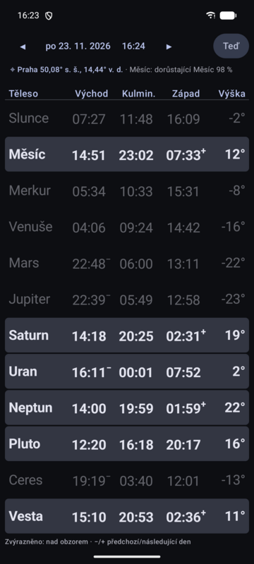
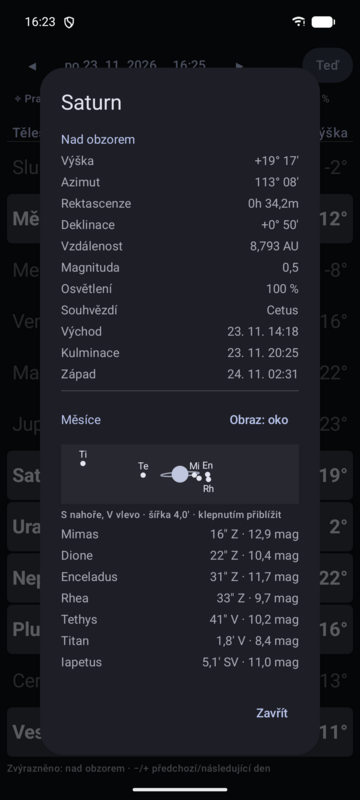
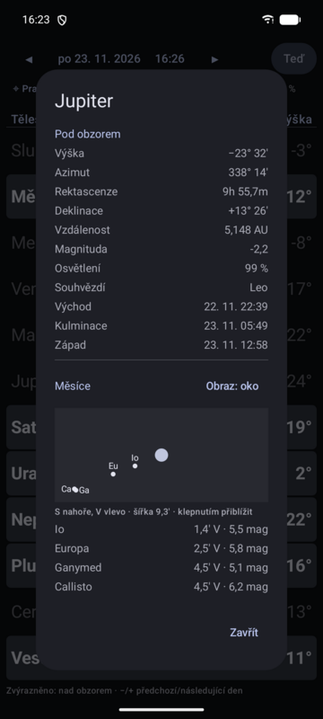

AstroInfoSluneční soustava – aplikace pro Android
Kdy dnes vychází a zapadá Slunce, Měsíc a planety a které z nich jsou právě nad obzorem? AstroInfo to ukáže na jediné obrazovce, a to pro místo, kde právě jste.



Co aplikace umí
- Tabulka východů, kulminací a západů Slunce, Měsíce, planet, Pluta a planetek Ceres a Vesta.
- Zvýraznění těles nad obzorem a jejich aktuální výška.
- Libovolné datum a čas, posun po dnech a režim „Teď“.
- Detail tělesa: výška, azimut, souřadnice, vzdálenost, jasnost, fáze, souhvězdí.
- Nákres měsíců Jupiteru, Saturnu, Uranu a Neptunu včetně prstenců Saturnu, přechodů, zákrytů a zatmění.
- Poloha zadaná ručně, nebo zjištěná z telefonu.
Přesnost a data
Výpočty používají knihovnu Astronomy Engine. Polohy planetek a měsíců Saturnu, Uranu a Neptunu vycházejí z dat JPL Horizons (NASA) pro roky 1990–2070.
Původ
Aplikace je inspirovaná programem AstroInfo pro Palm OS a zpracovává jeho obrazovku „Our Solar System“. Je napsaná znovu od základu. Nejde o převod původního programu ani o jeho oficiální verzi.
Soukromí
Aplikace nepotřebuje internet, nezobrazuje reklamy a neshromažďuje žádná data. Podrobnosti v zásadách ochrany soukromí.